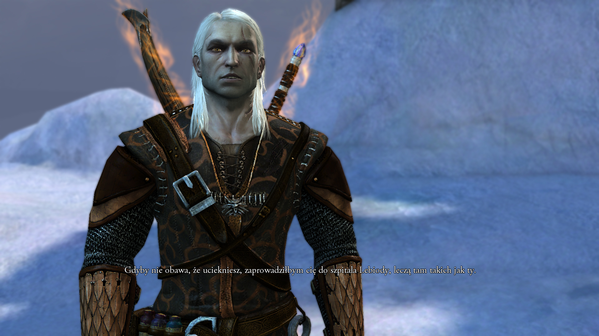
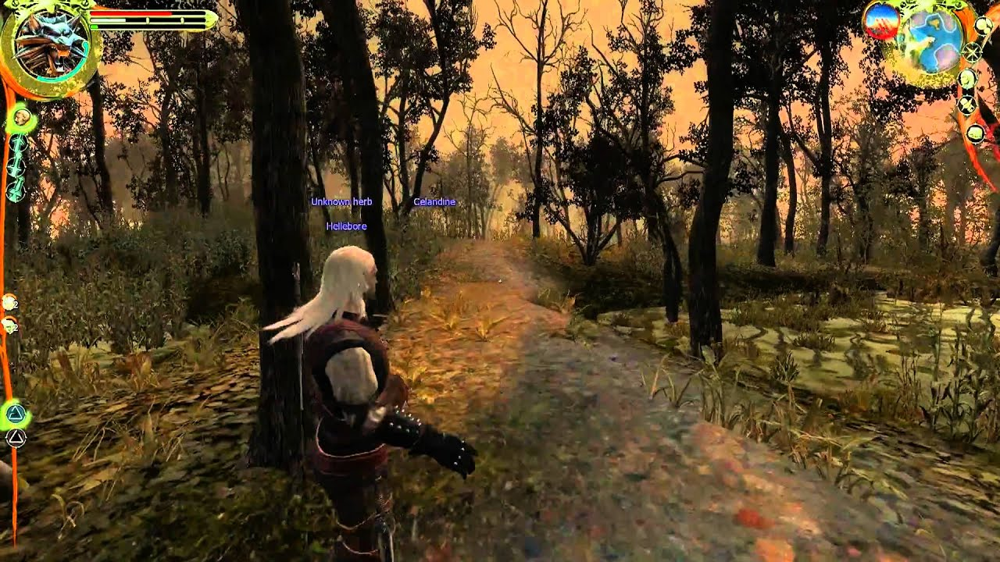
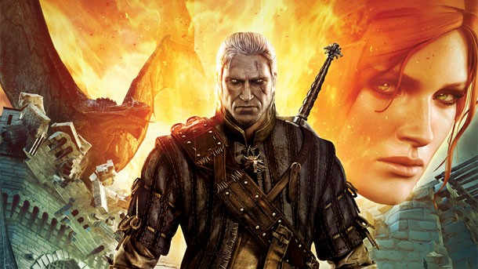
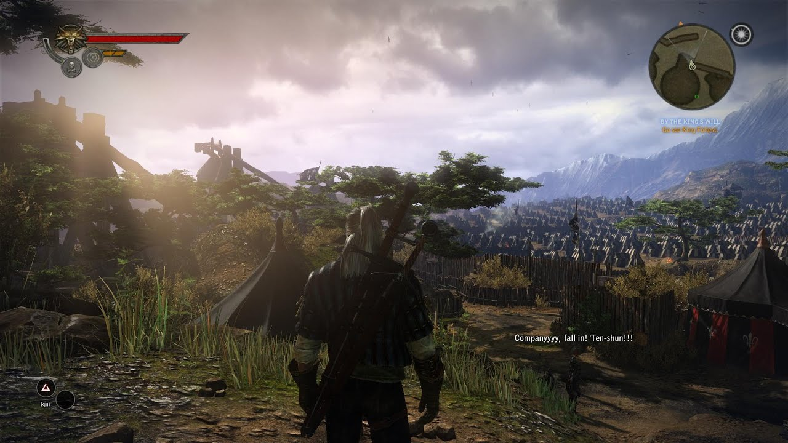
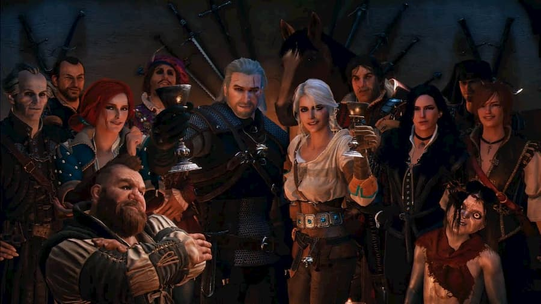
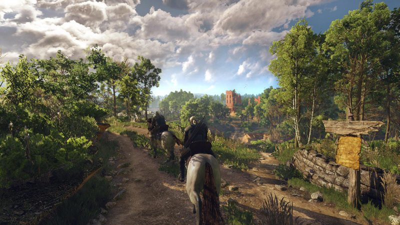

The Witcher:
Történet:
Ithlinne, egy tünde látnok megjövendöli, hogy a Fehér Fagy és Fehér Fény pusztítása során a világ meg fog semmisülni. Közben a kegyetlen Nilfgaardi Császárság is fenyegeti Temeria és a többi északi királyság féltve őrzött területeit. A sok viszálykodás között megjelenik a Lángoló Rózsa Rendje is, akik megígérik a népnek, hogy elhozzák a békét, valamint, hogy a jeges pusztítást csak az ő lángjuk semmisítheti meg. A Rend ellenfele a Scoia'tael vagy Mókusok, a kiközösített tünde és törpe lázadók, akik a másfajúak felszabadítását tűzik ki célul. Azonban további gondok jelentkeznek, mikor különféle teremtmények lepik el Temeriát. A játék bevezetőjében Ríviai Geralt, Temeria királyának, Foltestnek a lányát, Adda hercegnőt változtatja vissza. A királynak saját testvére szült gyermeket, és az egyik tisztviselő ezért megátkozta, hogy szörnnyé, strigává változzon át.
Karakterek:

- Riviai Geralt: A játék főhőse. Végtelenül cinikus, ugyanakkor nagylelkű is. Szeret nőkkel hetyegni.
- Triss Merigold: Geralt szerelme. Tapasztalt, segítőkész és gondoskodó is. Örökbe fogadhatja Alvint, az árván maradt fiút.
- Vesemir: A legöregebb élő witcher. Geralt és sok más witcher tanítója volt.
- Eskel: Geralt régi tanulótársa. Van egy ronda vágás az arcán.
- Lambert: Kitűnő harcos és járatos a mágiában is. Geralt barátja. Szeret összeveszni Triss-szel, ám valójában nem gyűlöli a varázslónőt.
- Leo: Tapasztalatlan witcher tanonc, aki még nem esett át a végső próbán. Kaer Morhen ostroma alatt a Professzor nyílvesszője végez vele.
- Shani: Fiatal medika, Geralt régi barátja. A játék során örökbe fogadhatja Alvint is.
- Vincent Meis: A vizimai őrség kapitánya. Ő felel a csatornai foglyokért, és szenvedélyes trófeagyűjtő. A játék során kiderül, hogy vérfarkas, de nem öl ártatlanokat.
- Azar Javed: A szalamandra nevű bűnszervezet vezetője. Jól képzett varázsló, ért az alakváltáshoz is.
- Professzor: Temeria hírhedt bűnözője megszállottan kutat új tudományok iránt.
- Foltest király: Temeria kissé gőgös uralkodója.
- Adda hercegnő: Ő volt a striga, akit Geralt annak idején megszabadított szörnyű átkától.
Gameplay:

A játék főhőse Ríviai Geralt, mutáns szörnyvadász, azaz witcher. A játékos a történet elejétől a végéig őt irányítja, és fejleszti a játék során teljesíthető küldetésekkel, valamint szörnyek megölésével, amiért tapasztalati pont (XP) jár. Szintlépéskor bronz-, ezüst-, illetve aranypontokat kap, ezek elosztásával lehet Geralt különböző tulajdonságait fejleszteni. A történet során különféle felszereléseket is lehet szerezni, például páncélokat, kardokat, amelyek idővel egyre jobbak lesznek. Időnként csatlakoznak a játékoshoz más szereplők is, felettük azonban nem lehet átvenni az irányítást. A küldetések során néha döntéseket kell hoznunk, melyek kihatással vannak a befejezésre -- ebből egyébként háromféle van a The Wictherben. A harc- és mágiarendszer szintén eltér a manapság megszokottól. Lehet fanyalogni vagy örülni: ha összevissza kattintgatunk, mint a Diablóban, Geraltot az első vasvillás paraszt is lenyomja. Ellenben ha hagyjuk, hogy befejezze az elkezdett mozdulatot, majd a jó pillanatban egy kattintással rávesszük arra, hogy az iménti mozgássorhoz fűzze hozzá a következőt, és így ütős kis kombinációkat hozzon létre, akkor bárki ellen kiállhatunk. Ha a helyzet és az ellenfél úgy kívánja, ki kell választanunk a megfelelő harcmodort is a rendelkezésünkre álló három közül. Ha nem a megfelelő taktikát alkalmazzuk, akkor vagy alig sebzünk majd valamit az ellenfélen, vagy eleve képtelenek leszünk belekezdeni a mozdulatba, ezért érdemes kitapasztalni, hogy ki mire érzékeny. Ja, és ne felejtsük: hétköznapi ellenfélnek sima acél, szörnyeknek ezüst, naponta kétszer, de lehet többször is.
The Witcher 2: Assasins of Kings
Történet:

A történet elején Geralt egy börtönben tér magához, majd hamarosan vallatni viszik. A későbbi visszaemlékezések során kiderül, hogy őt gyanúsítják Foltest, Temeria királyának meggyilkolásáért. A játékos számára kiderül, hogy valójában nem ő a tettes, azonban ezt Vernon Roche-on és néhány emberen kívül senki nem hajlandó elhinni neki. Geralt látta a gyilkost a szökése előtt, és megállapította, hogy ő is witcher volt. Roche hisz neki, és elmondja, hogy nemsokára Flotsamba hajóznak. Ad Geraltnak egy cellakulcsot, majd rábízza a szökést.
Gameplay:

A két kard maradt (a fémpenge az emberek, az ezüst pedig minden egyéb ellen), sőt, a gyors, de kicsit sebző, illetve a lassú, de csonttörő hatású támadás is visszatért, azonban korántsem úgy, ahogy azt várnánk. Kicsit előreszaladok, amikor azt mondom, hogy ez a küszöbön álló konzolos változat egyik következménye, de nem kell megijedni, a csaták csak az első pár szinten tűnnek kattintásmaratonnak, ahogy Geralt fejlődik, úgy sikerül egyre több stílust és elgondolást vinni a harcba is. Jó példa ennek érzékeltetésére a több ellenfél elleni harc: míg az első epizódban ez egy, a kezdetektől használható stílus volt, most külön kifejlesztendő képesség, ami jó esetben is csak a tizedik szint környékén válik elérhetővé. Amíg ez nincs meg, addig bizony marad a jól átgondolt védekezés és ide-oda gurulás, no meg a szintén visszatérő varázslatok okos használata. A védekezés és a mágia nem véletlenül került egy mondatba, az új rendszerben ugyanis minden harc közbeni blokk és bűbáj energiapontot fogyaszt, amire érdemes odafigyelni, hiszen ugyan automatikusan visszatöltődik, semmi sem kellemetlenebb, mint mikor pár feleslegesen ellőtt Igni miatt nem tudjuk mivel felfogni a bejövő pofont. Ha pedig egy picit odafigyelünk a kardvívó képességünk fejlesztésére, hamarosan megkapjuk a meglehetősen hasznos és halálos lehetőséget, a védő- és támadómozdulatként egyaránt szolgáló riposztot.
The Witcher 3: Wild Hunt
Történet:

Ríviai Geralt visszaszerezte emlékeit, ám furcsa álmok gyötrik. Érzi, hogy fogadott lánya, Ciri bajban van, és megérzései hamar bizonyosságot nyernek, miután találkozik rég nem látott szerelmével, Yenneferrel, a varázslónővel. Cirit az égen lovagló szellemhorda, a Vad Falka üldözi, a dolognak köze lehet a korábbi próféciákhoz. A lány az egész birodalom sorsát befolyásolhatja származása és képességei folytán, ráadásul apja, Emhyr var Emreis, Nilfgaard uralkodója is keresteti, akivel már a prológus teljesítése után is találkozunk Vizimában. Nem éppen rózsás a helyzet, véres és mocskos háború dúl a vidéken, Nilfgaard seregei mélyen előrenyomultak észak felé, csak néhány állam dacol vele, de nem sokáig. A megszállást a nép is megsínyli, az utak mellett akasztott holttestek lógnak, olyan szerencsétlenek, akik fellázadtak a hatalom ellen. Az egykori ütközetek helyszínein temetetlen hullák fekszenek, melyek vonzzák a ghoulokat és más rémségeket. Geralt próbál pártatlannak maradni politikában, inkább a feldúlt vidékeket járja Ciri után.
Gameplay:

A zűrzavaros helyzet megtörte a természet rendjét, számtalan fenevad merészkedik elő a rejtekéből, amely sok esetben zsíros megbízásokat jelent Geralt számára. Minden küldetés mellett feltüntetik az ajánlott szintet is, így nem fordulhat elő, hogy olyan dologba vágjuk a fejszénket, amely tapasztalt szörnyvadászt követel meg, de azért lehet próbálkozni. A witchernek sanyarú a helyzete, gúnyt űznek belőle, mutánsnak tartják, így nem könnyű fontos információt kicsikarni az emberekből. A szédületesen jól megírt párbeszédek során sokszor fontos döntéseket kell meghoznunk, a legtöbb lehetőség erkölcsileg nem mindig egyértelmű, így igyekeztem „a legkisebb rossz” elvet követni. Választásaink következményével persze csak akkor szembesülünk, amikor már késő változtatni rajtuk. A sokat látott Geralt ugyan sejtheti, hogy az adott helyzetben mire megy ki a játék, de mi nem, így sok esetben kínos meglepetések várnak ránk. Szerencsére a könyvekből és a korábbi részekből ismerős cimborákkal is találkozunk, akik nem restek ideiglenesen a mi oldalunkon harcolni.